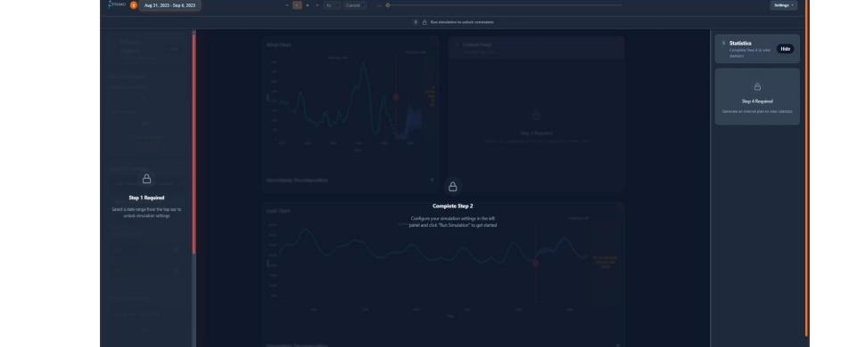
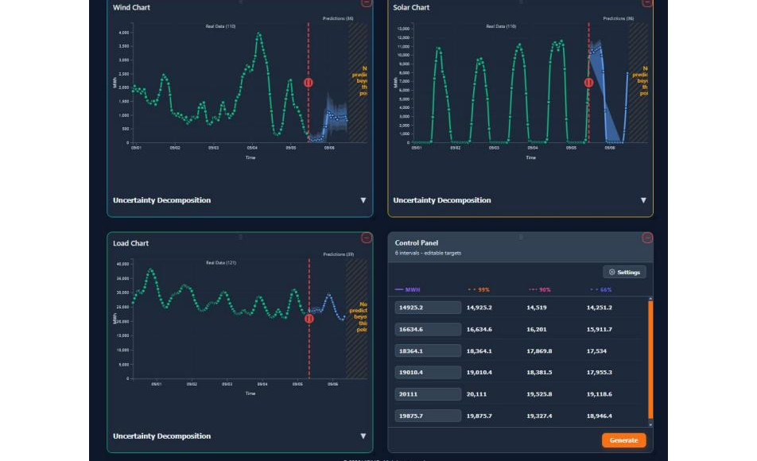
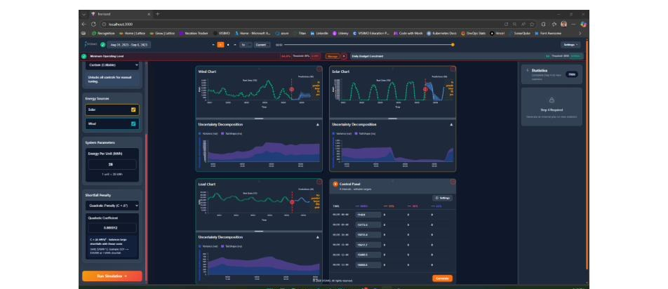

GRIDView
Uncertainty-Aware
Grid Intelligence
An AI-driven visualization platform for dynamic uncertainty quantification and risk-informed grid decision-making. Built for the probabilistic future of energy operations.
The Deterministic Grid Problem
The modern electric grid faces mounting variability driven by rapid renewable penetration, shifting demand patterns, and intensifying extreme weather events. Yet the dominant operational tools, including SCADA and EMS platforms, rely on deterministic models that assume static conditions. They provide point forecasts with no explicit uncertainty quantification.
Grid operators are forced into a binary choice: apply excessive conservative margins that waste resources, or leave the grid exposed during extreme conditions. Multi-sector interdependencies involving climate variability, economic factors, and distributed energy resources compound the challenge. As solar, wind, and battery storage proliferate, deterministic forecasts become structurally unreliable.
Three Probabilistic Modeling Approaches
Phase I benchmarked three methods on identical datasets, assessing probabilistic accuracy, calibration, and operational suitability side-by-side.
Load, solar, and wind models are trained independently but the underlying quantities are physically correlated. A Gaussian copula estimated from historical data captures cross-variable dependencies. Monte Carlo simulation draws correlated samples and transforms them through each model's inverse CDF. Net demand distributions derived from these joint scenarios translate directly into operational reserve requirements.
Uncertainty Modeling Results
All models were evaluated on MAE (point accuracy), CRPS (probabilistic accuracy), CRPS improvement over each model's own deterministic baseline, and Prediction Coverage of Interval Probability at three confidence levels.
| Metric | Gaussian Process | Bayesian Neural Network | TCN + Likelihood Head |
|---|---|---|---|
| MAE | 218.618 | 186.523 | 190.901 |
| CRPS | 494.886 | 141.025 | 139.079 |
| CRPS vs. Det. Baseline | −126.4% | +24.4% | +27.1% |
| PCIP 90% | 99.97% | 96.95% | 96.81% |
| PCIP 95% | 100.00% | 99.04% | 98.98% |
| PCIP 99% | 100.00% | 99.97% | 99.94% |
Decomposing Aleatory vs. Epistemic Uncertainty
Beyond aggregate uncertainty, Phase I explicitly decomposed predictive variance into components with different operational implications:
- Aleatory uncertainty reflects inherent process randomness, such as stochastic weather driving wind generation. It cannot be reduced regardless of more data or better models. Operators must manage it.
- Epistemic uncertainty reflects limited knowledge or model limitations. It can in principle be reduced through additional data, improved architecture, or better training. It signals where modeling investment pays off.
Epistemic uncertainty is estimated as the variance across independently trained ensemble members at each time step. Aleatory uncertainty is the non-negative residual: total squared error minus ensemble variance.
To validate this decomposition, a synthetic wind power dataset was generated with a known, time-varying aleatory variance component using a two-stage framework: a Gaussian Process captures the latent smooth signal, and a heteroskedastic Gamma GLM models the residual variance.
| Validation Metric | Value | Interpretation |
|---|---|---|
| Global Variance Ratio | 1.265 | 26% overestimation |
| Variance Correlation | 0.7235 | Meaningful tracking |
| Regression Slope | 0.8257 | Mild compression |
| Bin 1 Variance Ratio | 1.744 | Inflation in low-var regime |
| Bin 10 Variance Ratio | 1.112 | Near-correct at high var |
The GRIDView Application
GRIDView is deployed as a production-grade, full-stack web application on a modern containerized stack.
- Backend: Python, FastAPI, PyTorch. Probabilistic forecasts as Student-t distribution parameters, copula-based joint scenario sampling, and REST APIs for confidence bands.
- Frontend: React with Vite, D3.js for interactive fan charts and stacked uncertainty decomposition charts.
- Infrastructure: Docker / Docker Compose, nginx reverse proxy, Azure DevOps CI/CD pipeline.
- Data sources: GridStatus.io API for grid and market telemetry; Open-Meteo for weather context.
Locked panel indicators guide users through sequential workflow steps: date range selection, parameter configuration, constraint definition, then the live simulation. No step can be skipped, preventing misconfigured runs.

The main panel presents four simultaneous containers: predicted wind generation, predicted solar generation, predicted grid load, and the interval production control panel. All forecast charts include full uncertainty bands. The control table shows exactly how much energy to schedule at configurable confidence levels (default: 99%, 90%, 66%) for each upcoming decision interval.

Each forecast chart includes an expandable dropdown revealing stacked aleatory and epistemic uncertainty components. Operators can see not just how wide the uncertainty band is, but what kind of uncertainty drives it. Epistemic uncertainty suggests modeling improvements could help; aleatory uncertainty must be managed operationally.

Operational Decision Value
A simulation study over January 2024 quantified the financial impact of five production scheduling strategies under penalty scenarios ranging from 2× to 5× the marginal production cost per MWh underproduced.
| Strategy | Load Coverage | Underproduction (MWh) | Total Cost ($M) | % Above Perfect Knowledge |
|---|---|---|---|---|
| Perfect Knowledge | 100% | 0 | $223.1M | 0% |
| 99% Confidence | 99.2% | 132,713 | $317.1M – $335.6M | 46.2% (±4.1%) |
| 95% Confidence | 98.5% | 243,405 | $291.8M – $325.7M | 38.4% (±7.7%) |
| 75% Confidence | 97.1% | 483,713 | $278.3M – $345.7M | 39.8% (±15.1%) |
| Deterministic | 95.7% | 716,875 | $277.9M – $377.7M | 47.0% (±22.4%) |
Note: underproduction penalties in this table reflect plant-level financial exposure only, modeled as multiples of marginal production cost. Real-world costs would be substantially higher when including replacement energy procurement, scarcity pricing, contractual penalties, reliability impacts, and system-level consequences.
Commercialization & Go-to-Market
Despite systematic outreach to Entergy, Salt River Project, Arizona Public Service, Georgia Power, DTE Energy, and others, no commercial stakeholder interviews were completed in Phase I. This reflects well-known utility engagement challenges: long response timelines and strict internal approval processes for external research collaboration.
Phase II will restructure the engagement strategy with dedicated front-loading of stakeholder interviews in the first four to six weeks before any additional development begins.
- Primary targets: ISOs and RTOs with clear mandates for forecasting and reliability analysis, accustomed to research collaboration.
- Secondary targets: Large generation operators with significant renewable exposure and direct financial exposure to forecast uncertainty.
- Positioning: Decision support platform, not an autonomous control system. Human-in-the-loop throughout.
- Pricing model: Enterprise pilot with defined scope and quantifiable success criteria. Pilot case studies to support broader adoption.
- Data governance: On-prem, customer-managed cloud, and hybrid deployment options with configurable data boundaries.
Conclusions & Future Work
Phase I established technical feasibility across all core objectives: calibrated probabilistic forecasting at operational scale, validated uncertainty decomposition, and measured decision-level benefits over deterministic baselines. Phase II will evolve GRIDView from historical simulation toward real-time operational decision support.